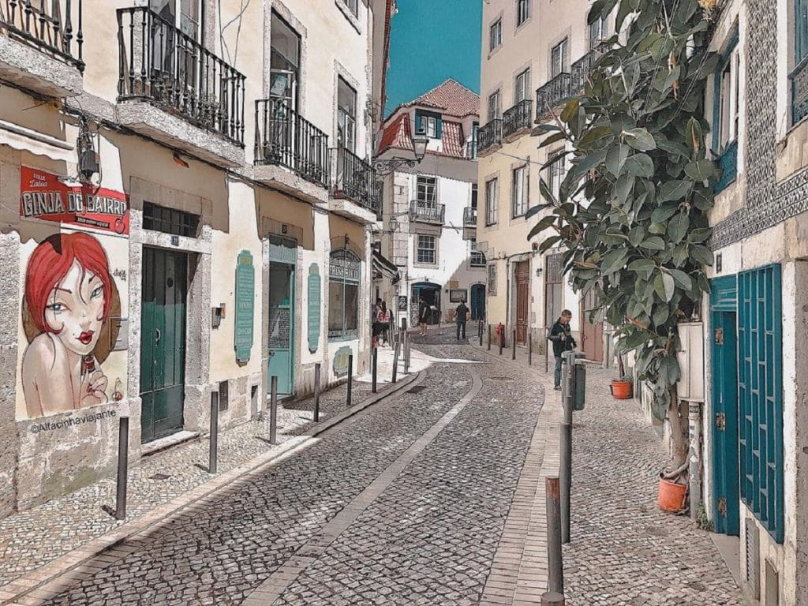

Onde Começamos
Saimos da Estação de Vila france de xira em direção a lisboa, fomos diretos do nosso local de origem até a paragem de Santa Apolónia.

1ª Paragem
Fomos andando pela cidade de lisboa ate que chegamos á casa dos bicos

2ª Paragem
depois de ficarmos la durante um tempo voltamos a andar ate á praça do comércio onde exploramos o local e tiramos uma foto

3ª Paragem
Depois de conteplarmos a praça do comércio fomos diretos para o objetivo principal da visita de estudo, o Lisbon Story Center, onde ficamos a conhecer melhor a história da cidade de Lisboa
4º Paragem
Depois de acabarmos de visitar o Lisbon Story Center fomos até a praça do rossio, emquanto estavamos a caminhar para la encontramos diversas lojas e pontos turisticos

5ª Paragem
Quando chegamos la fomos comer alguma coisa pois ja era hora de almoço, de seguida foram nos apresentadas as guias que iam estar connosco o resto do dia para conhecermos o bairro da Mouraria
